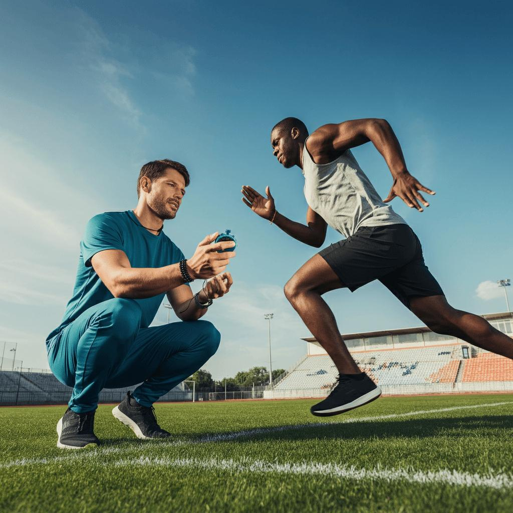

01 / ONE-TO-ONE
Personal run coaching
Individual training plans, pace guidance, regular check-ins and adjustments based on your progress.
- Goal and fitness assessment
- Weekly training structure
- Progress reviews